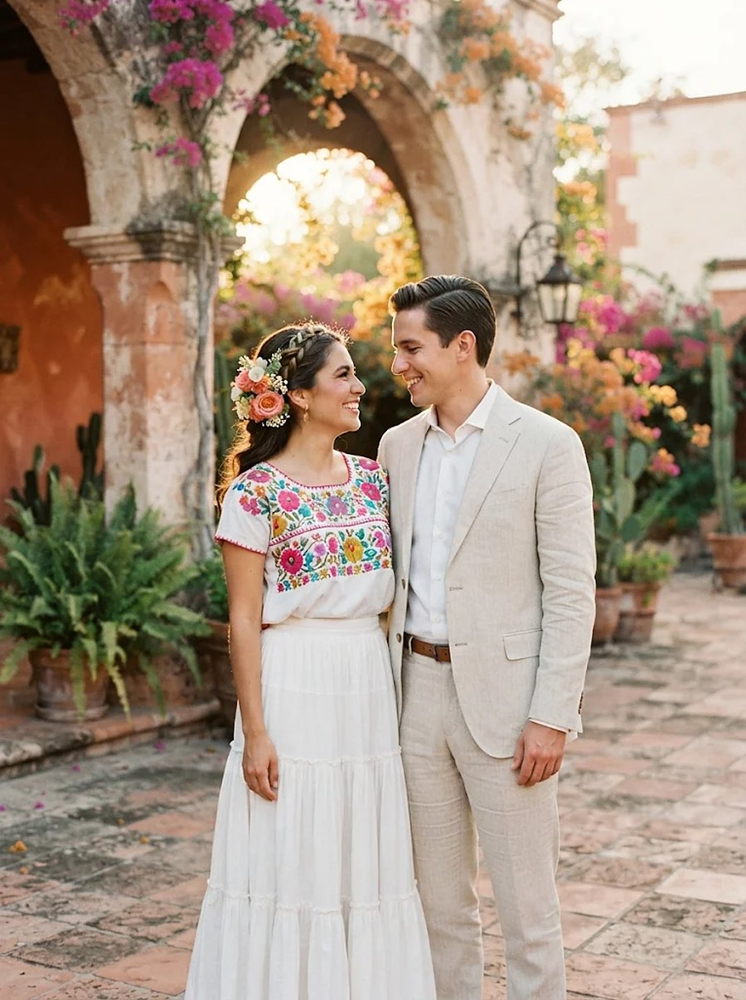
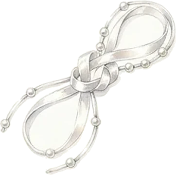
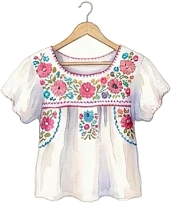
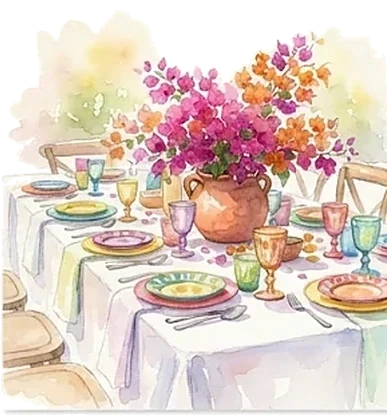
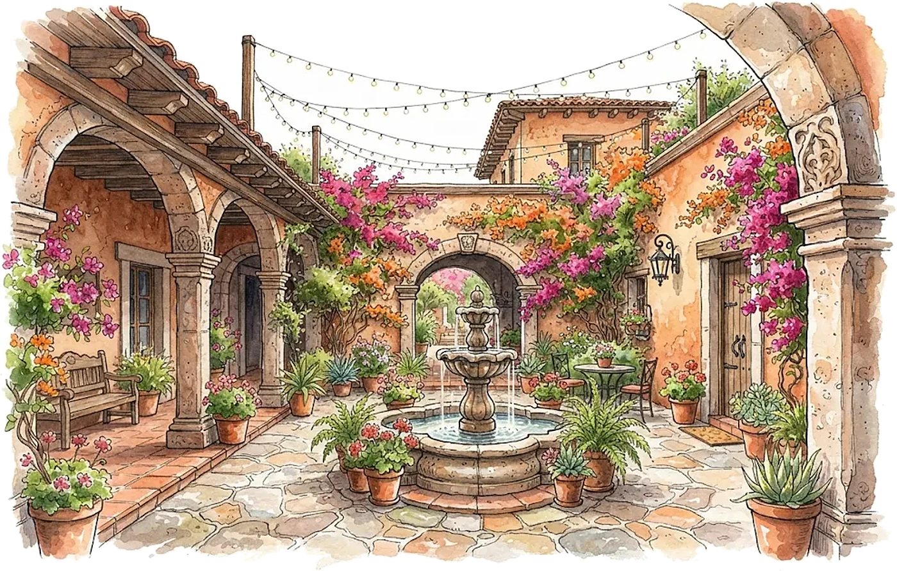
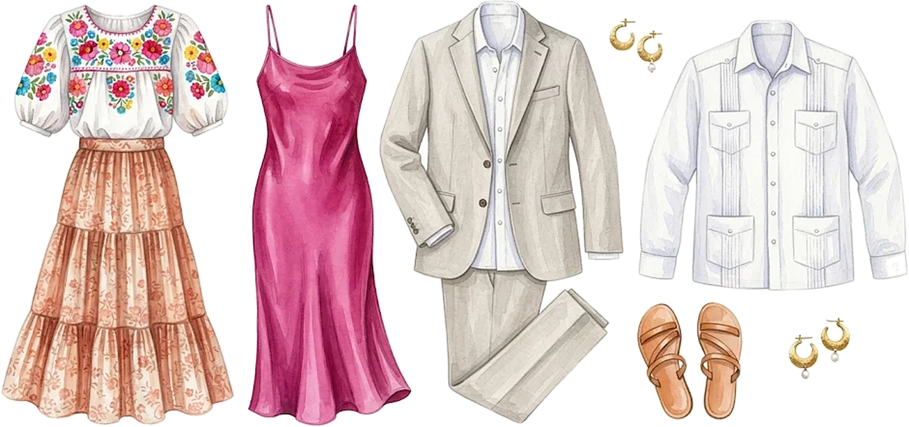

Le programme
Samedi 24 avril 2027
- 17 h 00Cérémonie : la bénédiction des arras

17 h 30Le lazo, noué par les padrinos
18 h 30Cocktail dans le patio
20 h 00Dîner sous les arcades- 22 h 00Bal et guitares
- 23 h 30Gâteau des mariés
Le lieu

Hacienda de las Bugambilias
Oaxaca
Tenue
Tenue de fête
Couleurs bienvenues : robes fleuries, lin clair, guayaberas. Celles et ceux qui le souhaitent peuvent porter une pièce brodée, sans aucune obligation.

Il reste
--jours
--heures
--minutes
Votre réponse
Merci de répondre avant le 15 mars 2027.
Je serai présent·eJe ne pourrai pas venir